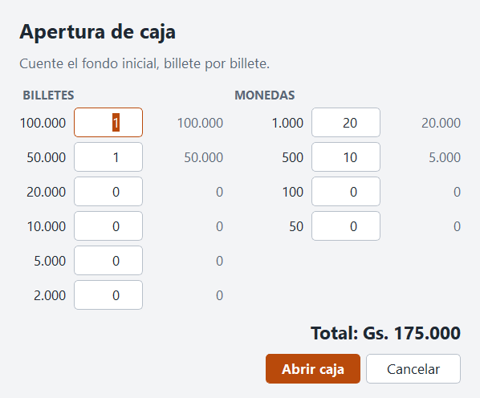
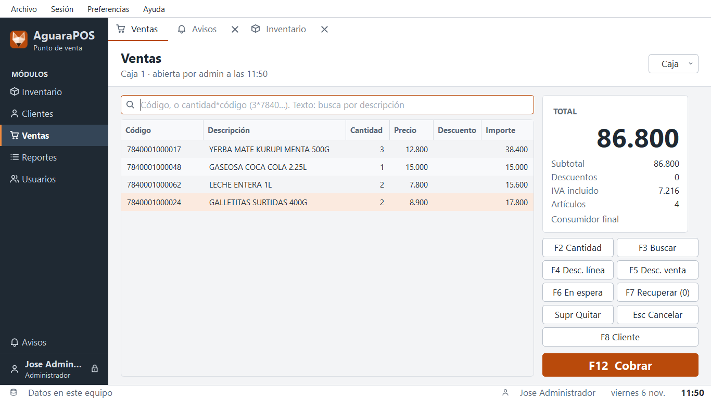
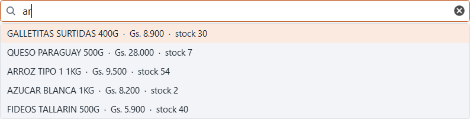
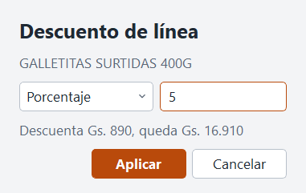
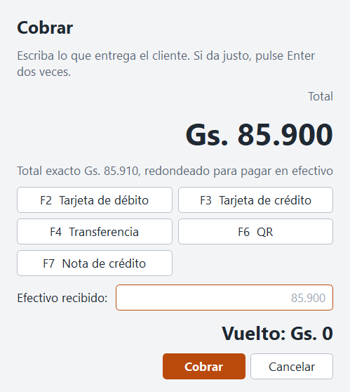
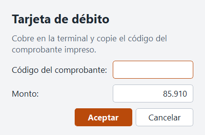
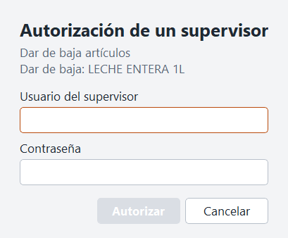
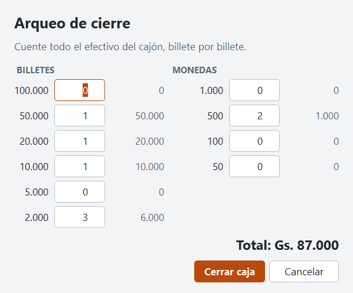
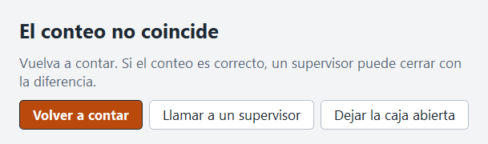

Manual del cajero
Este manual sigue el día de trabajo: abrir la caja, vender, cobrar y cerrar. Casi todo se hace con el teclado y el lector de códigos, sin tocar el ratón.
| Tecla | Qué hace |
|---|---|
| F2 | Cambiar la cantidad de la línea |
| F3 | Buscar un artículo |
| F4 | Descuento en la línea |
| F5 | Descuento en toda la venta |
| F6 | Poner la venta en espera |
| F7 | Recuperar una venta en espera |
| F8 | Elegir el cliente |
| F12 | Cobrar |
| Flechas | Moverse entre las líneas, o por la lista de sugerencias |
| Supr | Quitar la línea marcada, después de confirmar |
| Esc | Borrar lo escrito o cancelar la venta |
Abra AguaraPOS y escriba su usuario y su contraseña. Si la caja está abierta, la pantalla de Ventas aparece sola.
Si está cerrada, pulse Abrir caja y cuente el dinero del cajón, billete por billete. Ese es el fondo inicial.

Pase cada artículo por el lector. Si el código no lee, escríbalo y pulse Enter. El artículo aparece en la lista y el total se actualiza.


Las búsquedas no distinguen mayúsculas ni acentos, y las palabras van en cualquier orden: azucar kilo encuentra AZÚCAR BLANCA 1 KILO.
Si un código no existe, el aviso aparece abajo, sin detener nada. Siga con el próximo artículo.
Antes de quitar una línea con Supr o cancelar la venta con Esc, el programa pregunta. Enter y Esc dejan todo como estaba. Para confirmar, pulse Tab y Enter, o haga clic en el botón rojo. Así, un Enter de más no borra nada.
Con F4 descuenta la línea marcada y con F5 la venta entera, en porcentaje o en guaraníes. Si pasa de su límite, el programa pide un supervisor.

F6 guarda la venta en espera y deja la pantalla libre. F7 la recupera, incluso después de cerrar el programa.
Sin elegir nada, la venta es para Consumidor final. Si el cliente da su nombre o su RUC, pulse F8, búsquelo y elíjalo. Si no está, use Nuevo cliente.
Pulse F12. El monto grande es lo que hay que cobrar.

Escriba lo que entrega el cliente y pulse Enter. El vuelto queda a la vista.
Si le da justo, pulse Enter dos veces. El primero pone el monto exacto en el campo y el segundo cobra. Así, un Enter suelto nunca termina una venta.
El efectivo se escribe a mano. Si pasa un artículo por el lector con el cursor en este campo, suena un aviso, el campo se borra y no se cobra nada. Tampoco se acepta un monto que supere en más de Gs. 1.000.000 lo que hay que cobrar.
Redondeo: la moneda más chica es de 50 guaraníes, así que el efectivo se redondea. De 85.910 se cobran 85.900. Tarjetas y transferencias cobran el monto exacto.

El código es lo que prueba el pago. Cópielo con cuidado. Si ya se usó en otra venta, hace falta un supervisor.
Cargue primero la tarjeta o la transferencia, con el monto que corresponde. Lo que falta se paga en efectivo. F5 quita un comprobante mal cargado, después de confirmar.
Es un vale por una devolución. Use la tecla de Nota de crédito, escriba su número, por ejemplo NC-000012, y el programa toma su saldo. Lo que falte se paga de otra forma.
El botón Caja, arriba a la derecha, tiene todo lo demás. Varias opciones piden un supervisor.
| Opción | Para qué sirve | Quién |
|---|---|---|
| Ventas de la sesión | Ver las ventas, reimprimir, guardar en PDF y anular | Anular y copias: supervisor |
| Movimiento de caja | Ingresos, gastos y retiros de efectivo | Supervisor |
| Devolución | Devolver una venta anterior, entera o en parte | Supervisor |
| Abrir cajón | Abrir el cajón sin una venta | Supervisor |
| Ventas por subir | Ver las ventas que esperan al servidor | Cajero |
Cuando el programa pide un supervisor, esa persona escribe su usuario y su contraseña en su caja. Todo queda registrado.

Anular es para una venta mal cobrada de la sesión de hoy. Devolución es para lo que el cliente trae de vuelta, también de otros días, y hace falta el número del ticket. Si la venta se pagó con tarjeta o transferencia, el dinero se revierte en la terminal o en el banco: el programa solo lo registra.
Una franja amarilla avisa Sin conexión con el servidor.

El conteo es a ciegas: el programa no muestra cuánto debería haber. Si coincide, la caja se cierra y puede imprimir la planilla. Si no coincide, solo dice que no coincide.

Vuelva a contar. Si sigue sin coincidir, un supervisor puede cerrar con la diferencia, escribiendo el motivo.
La caja no cierra mientras haya ventas sin subir. Espere a que vuelva la conexión.
Si aparece Ayuda > Reportar un problema, cuente ahí qué estaba haciendo y qué pasó. No escriba datos de clientes ni contraseñas.
| Qué pasa | Qué hacer |
|---|---|
| «Venta cobrada, sin ticket» | La venta está guardada. Revise papel y encendido, y reimprima en Caja > Ventas de la sesión. Sale como original, sin marca de copia. |
| «Hay una caja sin cerrar» | Quedó abierta de otro día. Un supervisor debe cerrarla antes de vender. |
| Un artículo sin stock | Se vende igual, con aviso. Avise al encargado. |
| «Eso parece un código de barras» | El lector escribió en el campo de efectivo. Escriba el monto a mano. Si le pasa al teclear muy rápido, escríbalo de nuevo. |
| «No parece lo que entregó el cliente» | El monto es demasiado alto. Revíselo y corríjalo. |
| «Sin conexión» al abrir el programa | La caja del servidor debe estar encendida. Avise al encargado. |
| «Datos de una versión más nueva» | A este equipo le falta un parche. Avise al encargado. |